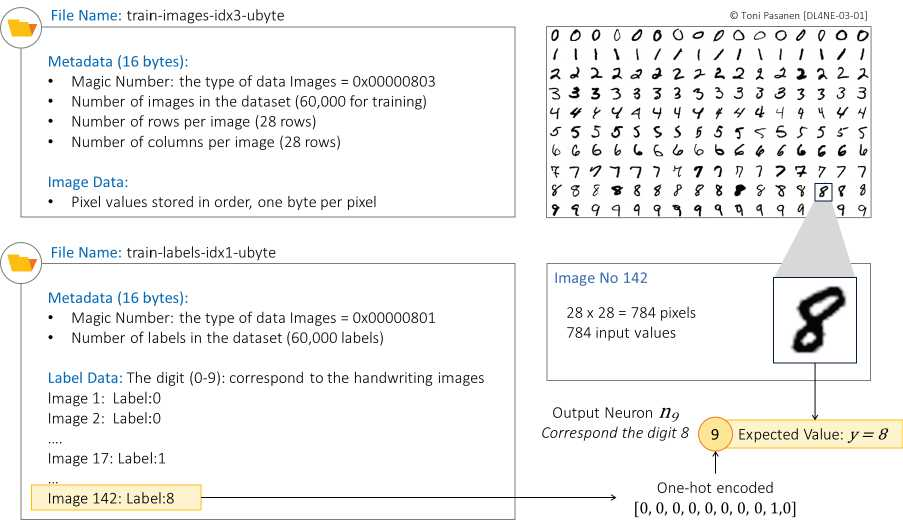
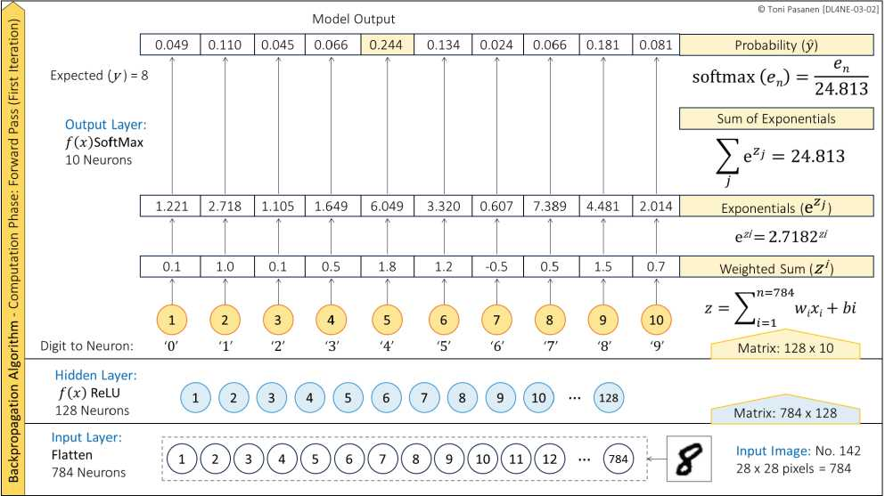

6万训练 + 1万测试，28×28 灰度图（784 个输入特征）。任务：0-9 十选一。网工类比：像“流量分类”——把一条流分到 10 类应用。数据虽小，但流程（前向概率→算 Loss→反向调参）与大模型一致。
10 个神经元各输出一个分数 z_i，Softmax：p_i = e^{z_i}/Σe^{z_j}，10 个概率和为 1，最大者即预测。比如输出 [0.05,0.8,…] 就判为“1”。它让模型“既给答案又给信心”。
Loss = -Σ y_i·log(p_i)，真实类 y=1，其余 0。若真相是“7”但模型只给 10% 概率，Loss 很大；给 90% 则很小。训练目标就是让 Loss 越来越小。比平方误差更适合分类。


举例：真相是 3，模型给 3 的概率 0.7 vs 0.1，哪种 Loss 更大？为什么？